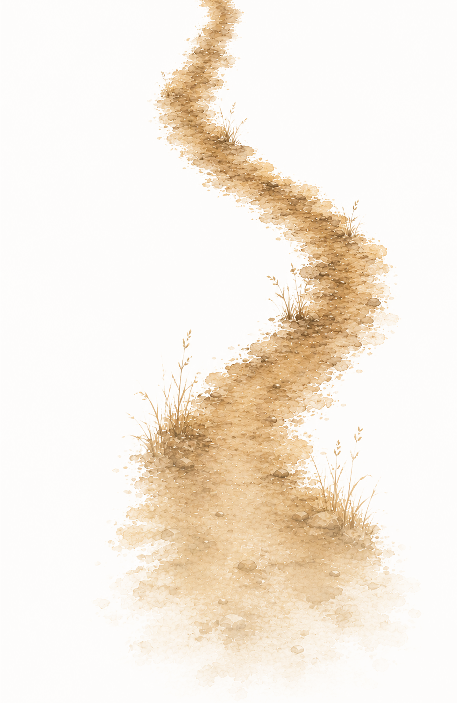

Relational
Therapy happens in relationship. You bring yourself, that's enough to begin. I bring who I am and what I know. Together we'll be present to what unfolds between us, and let the work take the shape it needs.
Melbourne · In Person & Online
the ground before you know

I work with individual adults across a broad range of experience. The work is unhurried, integrative, and shaped by what you bring.
Therapy happens in relationship. You bring yourself, that's enough to begin. I bring who I am and what I know. Together we'll be present to what unfolds between us, and let the work take the shape it needs.
Your story doesn't begin in the consulting room. We work with what's actually happening in your life — the contexts, relationships and conditions that shape how you experience things.
Real change rarely happens in a linear sequence. We take the time the work requires, and at a pace that actually allows it.
Wayfinding doesn't necessarily mean knowing where you're going. It's a practice of coming home to yourself and the terrain that is your life.
still here, after everything
I'm Richard Tronson. Before training as a psychotherapist, I spent years facilitating movement, community wellbeing, and self-inquiry. Those roots inform how I work. I bring a curious and imaginative mind, and a depth of feeling and presence.
I'm interested in the whole terrain of a life: what hurts, and the complex patterns of history, culture, body and longing that shape how a person finds their way. My work draws on psychology, embodiment, relationship, ritual, and the wider more-than-human world. All of that is in service of one thing: being with you in yours.
Learn more about my approach → Or reach out directly →Individual psychotherapy for adults — in person in Melbourne, or online across Australia and the world. Open-ended weekly or fortnightly sessions, ongoing or short-term as makes sense. The work spans a broad range of experience:
Anxiety & stress
Working underneath chronic worry, stress responses, and the patterns that keep them in place.
Life transitions & identity
The thresholds where a former self no longer fits.
Grief & loss
Bereavement, but also the quieter losses — of capacity, of relationship, of the life you had imagined.
Trauma & difficulty
Trauma-informed, integrative work for the experiences that don't yet have words, or that words alone haven't reached.
There is no application. The first step is reaching out. I'll take the time to understand your situation carefully before we begin.
Reach out however feels easiest. Send me a message, or arrange a call. A few words is enough to begin.
A short call to hear what's happening for you, answer any questions, and see whether working together feels right.
If we decide to begin, I'll complete a short intake to understand your background and needs. From there, we book a first session, and the pace and shape of the work emerges between us.
You don't need to explain everything at once.
Send a message, or book a free 20-minute call. Whichever feels easier.
I'll be in touch within two business days.
Book a free 20-minute call